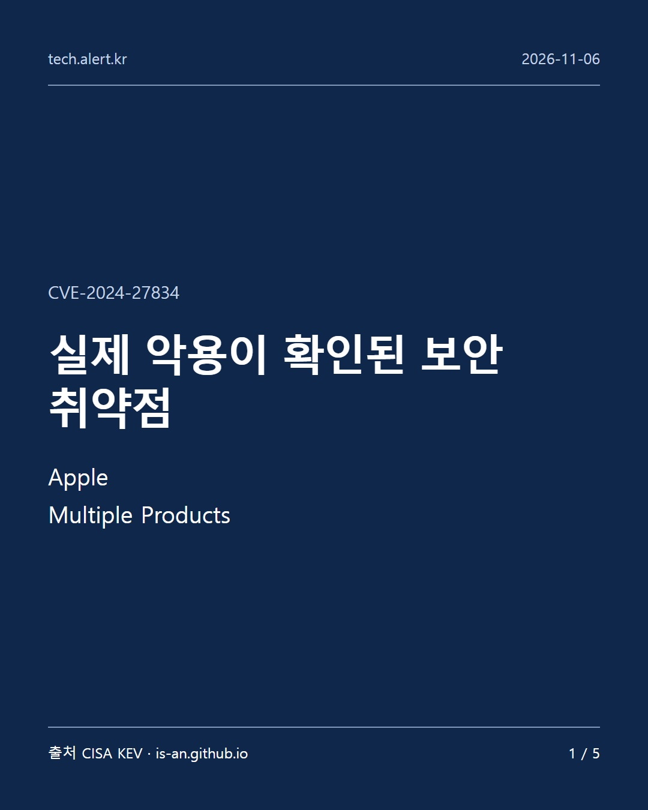
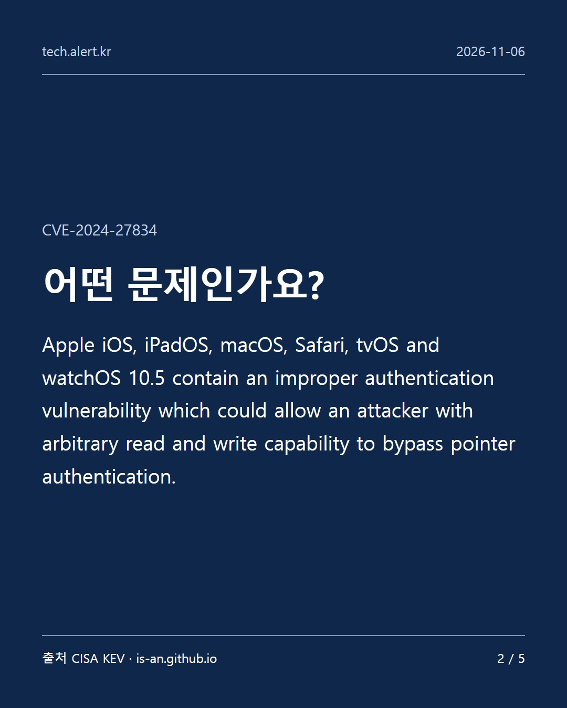
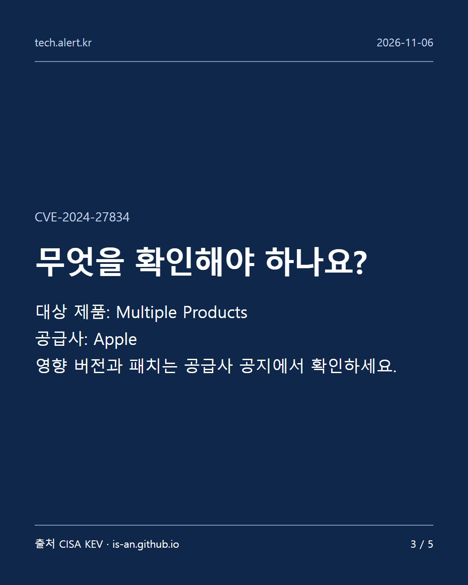
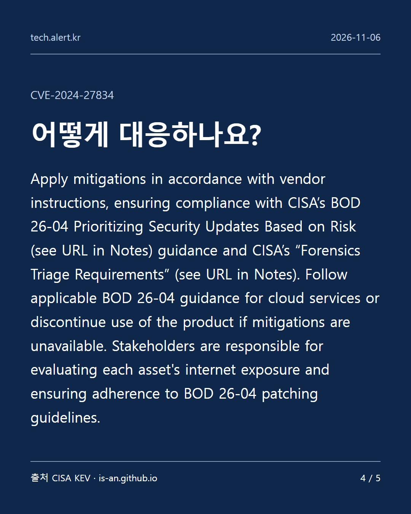
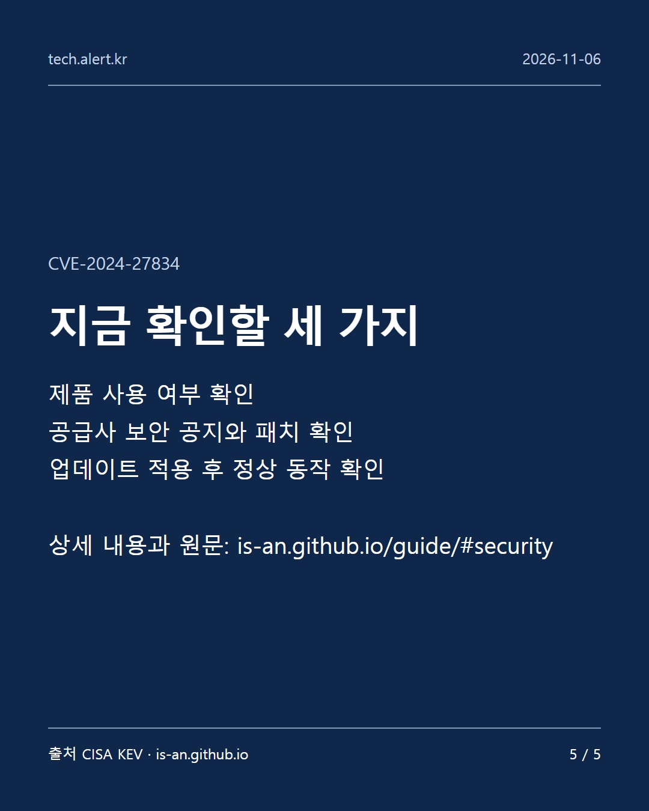

Apple Multiple Products — CVE-2024-27834
CISA가 실제 공격에 악용된 것으로 확인한 취약점입니다. KEV 등록일은 2026-11-04입니다. 이 글의 게시일과 취약점 최초 공개일은 다를 수 있습니다.
어떤 문제인가요?
Apple iOS, iPadOS, macOS, Safari, tvOS and watchOS 10.5 contain an improper authentication vulnerability which could allow an attacker with arbitrary read and write capability to bypass pointer authentication.
무엇을 확인해야 하나요?
대상 제품: Multiple Products 공급사: Apple 영향 버전과 패치는 공급사 공지에서 확인하세요.
어떻게 대응하나요?
Apply mitigations in accordance with vendor instructions, ensuring compliance with CISA’s BOD 26-04 Prioritizing Security Updates Based on Risk (see URL in Notes) guidance and CISA’s “Forensics Triage Requirements” (see URL in Notes). Follow applicable BOD 26-04 guidance for cloud services or discontinue use of the product if mitigations are unavailable. Stakeholders are responsible for evaluating each asset's internet exposure and ensuring adherence to BOD 26-04 patching guidelines.
기술 설명과 조치 문구는 CISA 영어 원문을 인용합니다. 정확한 영향 버전과 패치 정보는 공급사 공지를 확인하세요.




